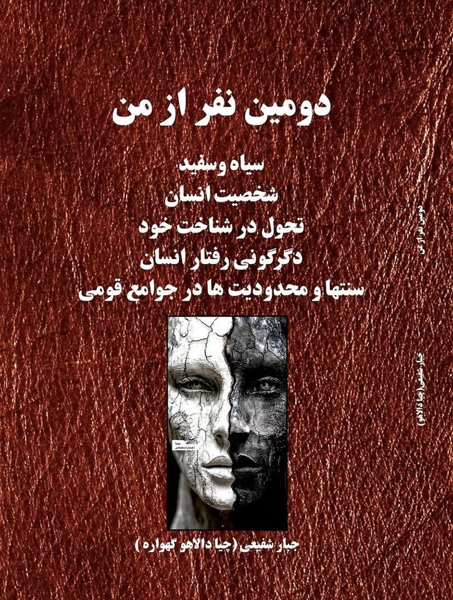

دومین نفر از من
کتابی دربارهٔ دوگانگی شخصیت و خودشناسی: چهرههای روشن و تاریک وجود انسان، تأثیر محیط و جامعه بر آنها، و راهی به سوی خودآگاهی و رشد فردی.
فایل PDF، ۸۵ صفحه، حدود ۵۵۰ کیلوبایت
دربارهٔ نویسنده

جبار شفیعی (چیاگوران دالاهو)
شاعر و نویسنده. اشعار فارسی و کردی و کتاب «دومین نفر از من» در این وبسایت منتشر شده است.
مشخصات کتاب
- نویسنده
- جبار شفیعی (چیاگوران دالاهو)
- ناشر
- انتشارات عاصم، تبریز
- نوبت چاپ
- اول، ۱۴۰۴
- تعداد صفحات
- ۸۵ صفحه
- شابک
- 978-622-331-897-9
- موضوع
- شخصیت چندگانه، خودشناسی
بخشهای کتاب
- چهرههای سیاه و سفید
- شخصیت انسان
- تحول در شناخت خود: سفری به سوی خودآگاهی و رشد شخصی
- دگرگونی رفتار انسان: بررسی دوگانگی رفتار در سطح فردی و گروهی
- سنتها و محدودیتها در جوامع قومی و مذهبی: ریشهها، تأثیرات و چالشها